Hi, I'm Osanda
Nimalarathna.
I help engineering teams ship faster with confidence. For 10+ years I've designed test automation frameworks, built quality pipelines and mentored QE teams — now for Singapore's national trade platform at GovTech.
Quality engineer at heart. Builder by habit.
I'm a Lead Software Engineer at GovTech Singapore, where I lead test automation for TradeNet — the National Single Window that processes import, export and transhipment declarations for Singapore's entire trade community.
My work sits where quality meets engineering: I design automation frameworks from the ground up, embed testing into CI/CD, and coach teams to treat quality as everyone's job. Along the way I've published a family of open-source testing tools used by engineers worldwide and ranked #1 on Test Automation University.
- Framework architectUI, API, mobile and visual testing frameworks built for scale and readability.
- Team multiplierTrainer and mentor who has upskilled QE teams at every company I've joined.
- Open-source creatorFounder of MaxSoft and author of IntelliAPI, API Health Checker and other open-source testing tools.
- Current role
Lead Software Engineer, GovTech - Based in
Singapore - Education
BSc (Sp.) Computer Science
Skills & journey
From intern to lead across Sri Lanka and Singapore — a decade of building automation that teams rely on. Select a role to see the details.
Test automation
Languages
Performance & quality
CI/CD & cloud
RPA & platforms
Ways of working
Feb 2025 — Present
Lead Software Engineer
GovTech Singapore · via Virtusa · One-North, Singapore
TradeNet
Singapore's National Single Window for trade declarations — one platform through which the trade and logistics community meets all import, export and transhipment requirements across multiple regulatory agencies.
Key contributions
- Lead test automation for TradeNet, building UI, API and visual test suites with Playwright, Cucumber and Spring Boot.
- Own test execution and defect triage, keeping releases on schedule and issues resolved quickly.
- Raise engineering standards through hands-on code reviews and clear, actionable feedback.
- Shape delivery plans by refining requirements, breaking down user stories and estimating effort with the product team.
Aug 2022 — Feb 2025
Lead Automation Engineer
Activate Interactive · Paya Lebar, Singapore
SHARE
Self-Help And Rehabilitation E-Application — helps supervisees and ex-supervisees take charge of their rehabilitation through learning resources, job recommendations and progress tracking, while helping supervisors engage with them more effectively.
MPA
The Maritime and Port Authority of Singapore's online platform for port information, shipping services, regulations and real-time maritime updates.
SGSecure 2.0
A national public-safety programme comprising a citizen mobile app for alerts and incident reporting, and an admin portal that gives authorities real-time data to coordinate their response.
CRISP
Cloud Resource and Infrastructure Services Platform — accelerates government application migration to GCC 2.0 using Infrastructure as Code, with secure, scalable and modular foundations.
Key contributions
- Led quality engineering across four Singapore Government digital services, including SGSecure and SHARE.
- Built API automation with Playwright and mobile automation with Appium for iOS and Android.
- Ran performance testing with Gatling to uncover bottlenecks and improve scalability.
- Defined QA standards and practices adopted across project teams.
- Trained QE engineers in modern automation techniques, raising the team's overall capability.
- Managed test execution, defect tracking and code reviews to keep quality high and releases predictable.
Jul 2022 — Aug 2022
Technical Specialist
Wiley Global Technology · Nawala, Sri Lanka
Author Services
Part of the Wiley Publishing Platform — a one-stop shop that helps research authors worldwide publish articles and access the products and services they need.
Key contributions
- Led automation and QE processes for Wiley's research publishing platform.
- Trained QE team members on advanced web and API automation techniques.
- Reviewed colleagues' code and set quality standards for the automation suite.
Jul 2021 — Jun 2022
Associate Technical Specialist
Wiley Global Technology · Nawala, Sri Lanka
Author Services
Part of the Wiley Publishing Platform — a one-stop shop that helps research authors worldwide publish articles and access the products and services they need.
Key contributions
- Built plugins that extended the in-house automation frameworks and simplified day-to-day testing.
- Optimised the automation suite for faster, more reliable feedback in Jenkins pipelines.
- Authored QE process and tooling documentation in Confluence to support knowledge sharing.
Jun 2019 — Jun 2021
Senior Software Quality Engineer
Wiley Global Technology · Nawala, Sri Lanka
Author Services
Part of the Wiley Publishing Platform — a one-stop shop that helps research authors worldwide publish articles and access the products and services they need.
Key contributions
- Designed and maintained UI and API test suites with Teasy, Selenium and Rest Assured.
- Designed test matrices and derived test scenarios for user stories.
- Contributed to user story breakdown and estimation sessions.
Nov 2018 — May 2019
Senior Software Quality Engineer
CingleVue International · Kollupitiya, Sri Lanka
Virtuoso
An e-learning platform that enhances teaching and learning outcomes, with research into speech recognition as a new way for users to interact with the software.
Key contributions
- Designed and maintained automated tests for a web-based e-learning platform using Robot Framework.
- Ran training sessions that helped the QE team adopt effective Robot Framework practices.
- Managed test cases, execution and defect tracking to maintain a high quality bar.
- Contributed to user story breakdown and estimation sessions.
Aug 2017 — Oct 2018
Software Quality Engineer
Pearson Lanka · Dematagoda, Sri Lanka
Pearson Prep
A study app that auto-creates flashcards from students' notes, offers expert decks aligned to Pearson textbooks and shows real-time progress to guide study choices.
Key contributions
- Built a cross-platform mobile automation framework with Gauge, Appium and Java — one codebase covering both Android and iOS.
- Introduced IntelliAPI, my codeless API testing framework, which the Pearson Mobile team adopted for API automation.
- Set up CI/CD pipelines for the mobile and API test suites, speeding up feedback on every build.
- Guided the QE team on automation strategy and kept testing aligned with project goals and timelines.
- Performed functional and non-functional testing, and designed manual test cases in HP ALM.
- Presented product demos to product owners and documented QE processes in Confluence.
Jan 2017 — Jul 2017
Associate Software Quality Engineer
Mitra Innovation · Moratuwa, Sri Lanka
Blue Squirrel
A personal finance app that helps people plan and achieve their life goals. Mitra was the technology partner for migrating the iOS app to Android.
Modern Hardware
Sales process automation for a leading steel and hardware importer — covering orders, invoicing, customer management, a sales dashboard and integrations.
Kraydel
Connected-care technology that combines biometrics and IoT to help elderly people stay safe and in touch with their loved ones.
Key contributions
- Built API and mobile automation frameworks with Gauge, Rest Assured, Appium and Java for Android and iOS.
- Wrote test strategies, plans and regression reports based on functional and technical specifications.
- Managed QA deployments and build artifacts with TeamCity.
- Guided QE team members on effective automation practices.
- Designed manual test cases in Zephyr and performed functional testing of mobile apps.
- Managed test execution and defect tracking, and took part in code reviews and estimation.
Aug 2016 — Dec 2016
Intern Software Engineer
Mitra Innovation · Moratuwa, Sri Lanka
Ramsay Health Care
A communication platform for Ramsay Health Care, a global healthcare provider operating 530+ facilities across 10 countries.
Key contributions
- Delivered a proof of concept on ActiveCampaign to automate marketing workflows.
- Integrated SendGrid for cloud email delivery, removing the need to maintain mail servers.
- Built responsive HTML email templates and dynamic, event-driven email notifications.
- Developed an activity log that gives administrators visibility of user actions.
- Demonstrated features to the client and iterated on their feedback in an Agile team.
2013 — 2017
BSc (Special) in Computer Science & Technology
Uva Wellassa University · Badulla, Sri Lanka
- Four-year specialist degree covering software engineering, algorithms, networking and data systems.
- Research: MySight, an Android app that reads printed text aloud for visually impaired users — published in the University of Kelaniya repository.
1998 — 2011
G.C.E. Advanced & Ordinary Levels
G/Dharmasoka College · Ambalangoda, Sri Lanka
- A/L 2011: Combined Maths (A), General Information Technology (A), General English (A), Physics (C), Chemistry (C).
- O/L 2008: 9 A grades.
How I can help you
From a framework built from scratch to a team ready to own quality — here's how I can help.
Automation Framework Development
Scalable, maintainable test automation for web, mobile and APIs — designed around your stack, wired into CI/CD and easy for your team to extend.
Quality Engineering Consulting
Practical advice on test strategy, tool selection and framework architecture, so you invest in automation that pays off.
Training & Workshops
Hands-on sessions on web, API and mobile automation that focus on real-world practice — your team leaves ready to apply it the next day.
Freelance Engineering
Flexible, end-to-end delivery for projects such as:
- Test automation
- Robotic process automation (RPA)
- Web application development
Projects & publications
Open-source tools I created to solve real testing problems — adopted by teams and engineers around the world.
MaxSoft TestNG Test Results Analyzer
Turns TestNG runs into an Excel report that groups failed and skipped tests by root cause, so you can fix the biggest issues first.
View details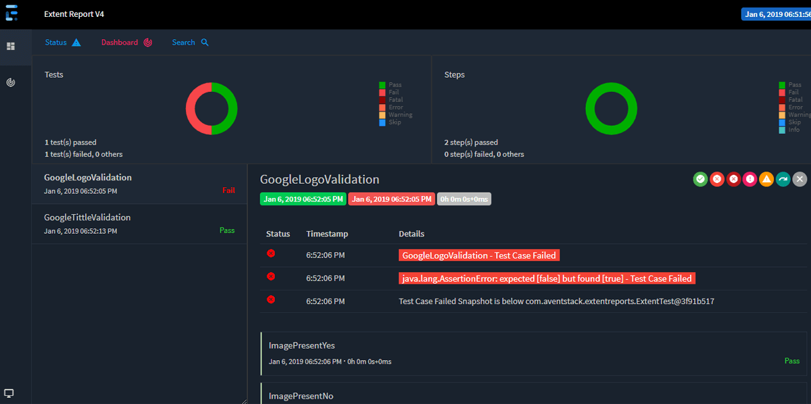
PublicationMaxSoft Extent Reporter
Drop-in plugin that generates rich Extent HTML reports — with screenshots on failure — for any TestNG framework, with zero reporting code.
View details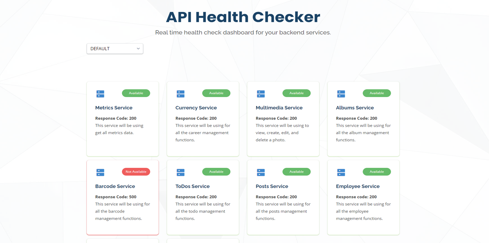
PublicationMaxSoft API Health Checker
Real-time dashboard that monitors every backend service across environments. My most popular repo, with 23 stars and 21 forks on GitHub.
View details Publication
PublicationTest Automation Master
My Medium publication of hands-on tutorials on web, mobile and API automation and DevOps, followed by 275+ readers.
View details Publication
PublicationMaxSoft WebDriver Manager
Launch any browser on any OS with a single line of code — no driver downloads or configuration required.
View details Publication
PublicationMaxSoft GReporter
Gauge plugin that automatically emails a visual test summary to stakeholders after every run — no more manual status reports.
View details Publication
PublicationMaxSoft IntelliAPI
The first codeless, cross-platform tool for API and database testing. Write tests in plain business language and get rich reports out of the box.
View details Publication
PublicationMySight — A New Vision for the Blind
Research app that lets visually impaired people read books and receipts aloud using just their phone's camera.
View details Project
ProjectMaxSoft WebBot
Codeless, cross-platform web UI automation. Anyone on the team can write tests in plain language, with parallel runs and live reports.
View details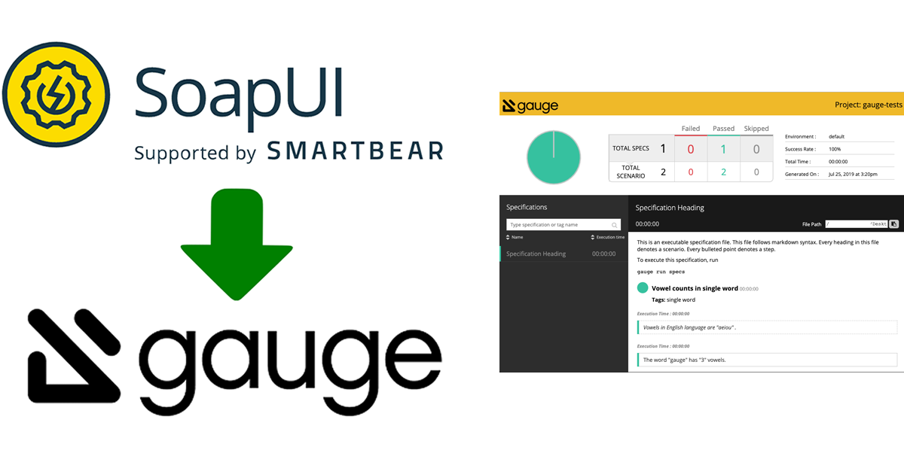
ProjectSoapUI to Gauge Plugin
Runs SoapUI test suites from Gauge and produces detailed HTML reports — reporting that the free edition of SoapUI lacks.
View details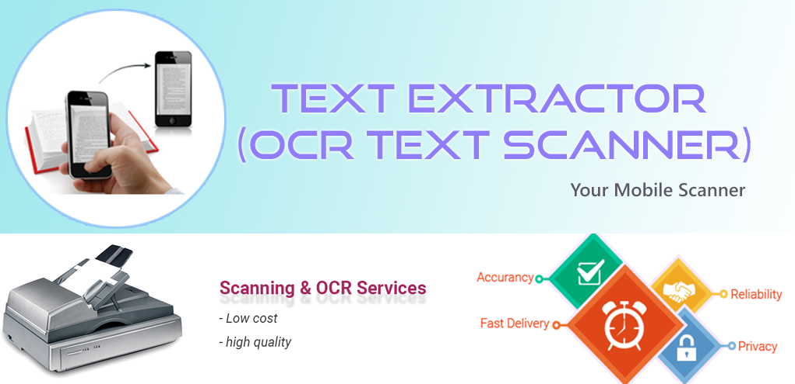
ProjectText Extractor — OCR Scanner
Android app that captures text from any image so you can edit, copy and share it instantly.
View details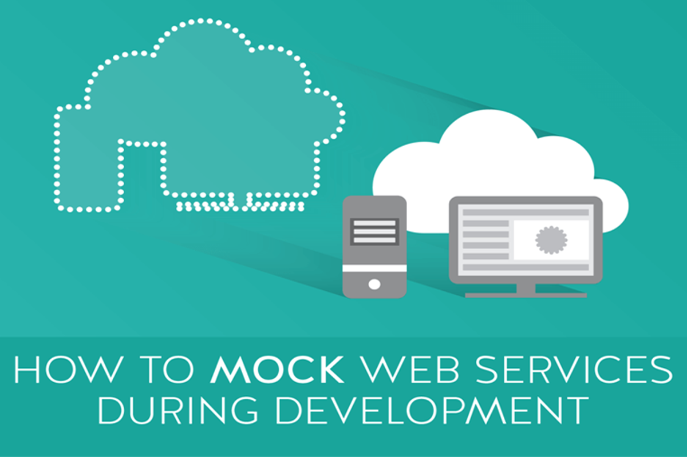
ProjectMock API Server
A reference implementation for building and deploying a lightweight mock API server with Express.js and Firebase in minutes.
View detailsCertifications & awards
Industry-recognised certifications and awards, linked to their official verification pages where available.
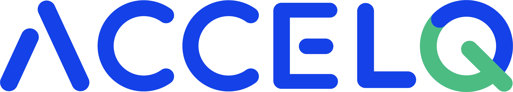
Certified ACCELQ Automation Expert
ACCELQ · Oct 2023Advanced design, architecture and development of complex automation suites on ACCELQ.
Certified ACCELQ Automation Engineer
ACCELQ · Oct 2023Building, managing and scaling test automation on the ACCELQ platform.
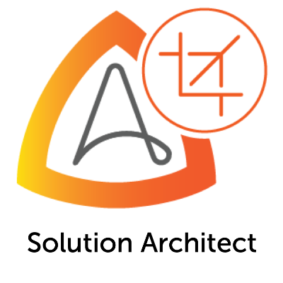
Certified RPA Solution Architect
Automation Anywhere · Aug 2020Designing large-scale, highly available, multi-bot RPA solutions, including disaster recovery.
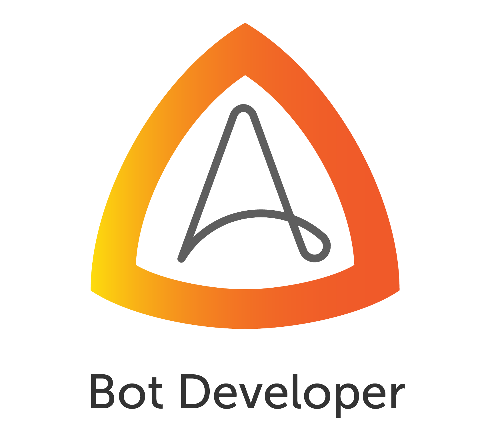
Certified Bot Developer — Enterprise 11
Automation Anywhere · Aug 2021Building, deploying and maintaining bots on Automation Anywhere Enterprise 11.
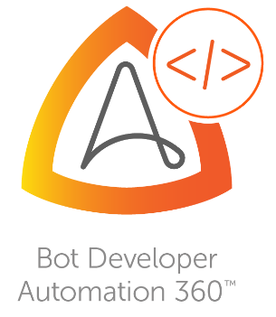
Certified Bot Developer — Automation 360
Automation Anywhere · Aug 2021Resilient bot development with Automation 360, AISense and inline Python and JavaScript scripting.
Certified IQ Bot Developer
Automation Anywhere · Aug 2021Intelligent document processing for semi-structured and unstructured data with IQ Bot.
Certified Secure Bot Developer
Automation Anywhere · Sep 2021Secure bot design, development and deployment under Automation Anywhere's Bot Security Program.
HackerRank Java (Basic) Certificate
HackerRank · Aug 2021Verified Java skills: object-oriented programming, collections, generics, exception handling and more.
MongoDB Basics
MongoDB University · Dec 2021CRUD, indexing, data modelling and aggregation pipelines with MongoDB and Atlas.
MongoDB Cluster Administration
MongoDB University · Apr 2022Administering standalone nodes, replica sets and sharded clusters.
Gremlin Certified Chaos Engineering Practitioner
Gremlin · Jun 2021Planning and running chaos experiments and GameDays to build more resilient systems.
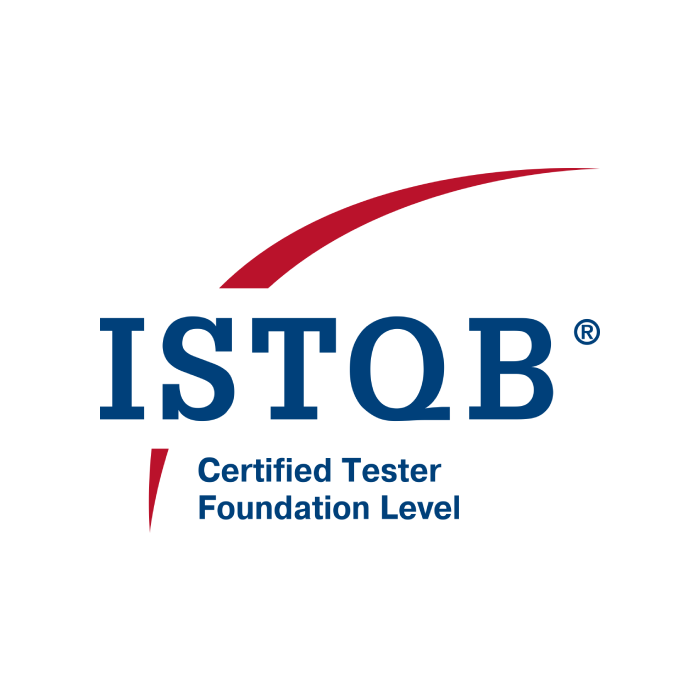
ISTQB® Certified Tester — Foundation Level
ISTQB · Jun 2017The internationally recognised foundation of software testing principles and practice.
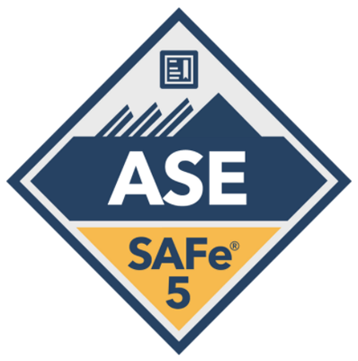
Certified SAFe® 5 Agile Software Engineer
Scaled Agile, Inc. · Feb 2021Test-first development, BDD and built-in quality in Lean-Agile delivery.
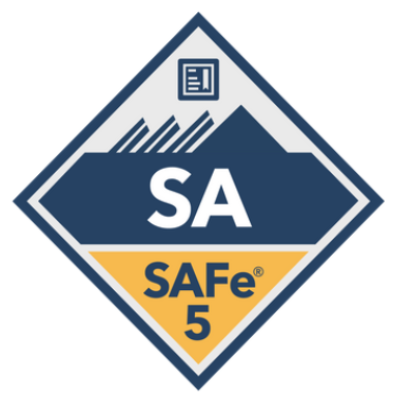
Certified SAFe® 5 Agilist
Scaled Agile, Inc. · Jul 2020Leading Lean-Agile transformation, PI Planning and Agile Release Trains at enterprise scale.
#1 on Test Automation University
Test Automation University · May 2020Ranked first on the leaderboard of Applitools' Test Automation University, a leading free learning platform for test automation.
#1 for Java on HackerRank
HackerRank · May 2020Top-ranked on the HackerRank Java practice leaderboard.
HackerRank Gold — Problem Solving
HackerRank · Jun 2020Gold badge earned for algorithmic problem solving.
HackerRank Gold — JavaScript
HackerRank · Apr 2020Gold badge earned for JavaScript.
1st Runner-up — Deft Coders Hackathon 2015
Computer Society of Uva Wellassa University · Mar 2015Placed second in the annual hackathon run by the Computer Society of Uva Wellassa University.
What colleagues say
Let's build quality together.
Hiring for a quality engineering or automation role, or need help with a project? I'd love to hear from you.